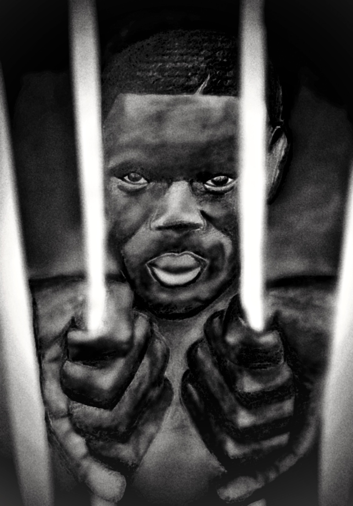
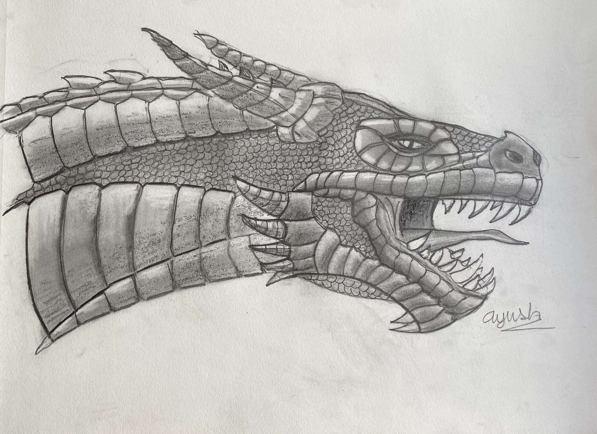
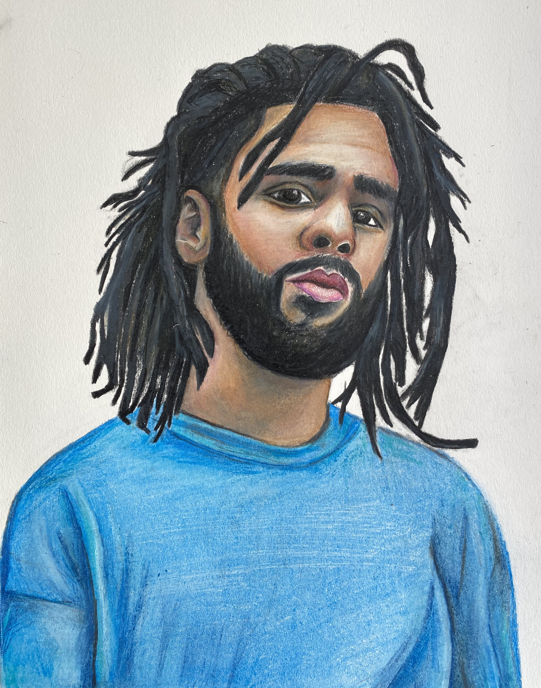

Featured Works

#BLM
Charcoal
-

-

-

-


J. Cole
Colored Pencil
About Me
Hey 👋
I’m Ayush Gupta, a self-taught artist focused on hyper-realistic drawings. I’m drawn to the challenge of capturing detail so precisely that something flat starts to feel alive. What looks simple usually isn’t. Most pieces come from hours of quiet focus, building things layer by layer until it finally clicks.
I’ve been into art since second grade, starting in small classes in my teacher's garage. That’s where it first stuck. I moved through oil painting, experimented a lot, had some wins and a lot of misses, and slowly developed my eye for detail. Over time, I stepped away from formal classes and taught myself through observation, repetition, and trial and error.
Now I work mostly with graphite, charcoal, and colored pencil. Faces are my favorite. There’s something wild about getting a portrait to the point where it feels like it’s looking back at you. That moment never gets old.
Just me, a pencil, and a lot of patience